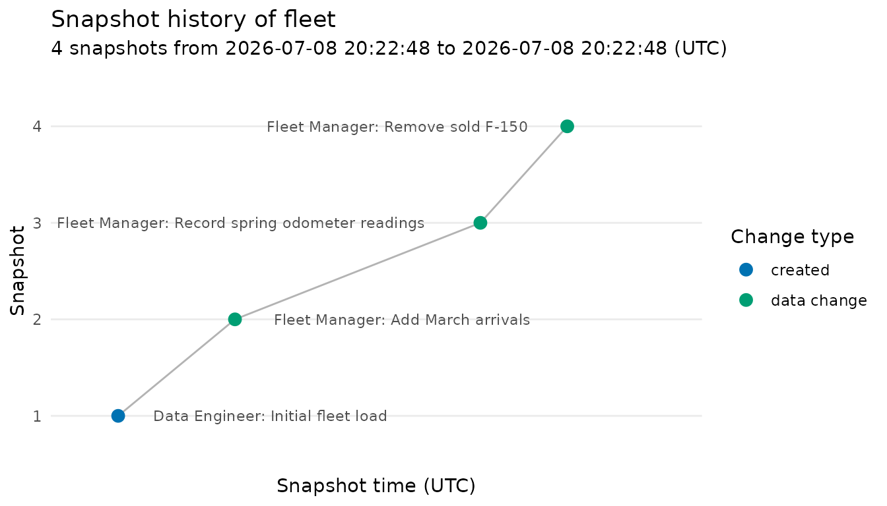
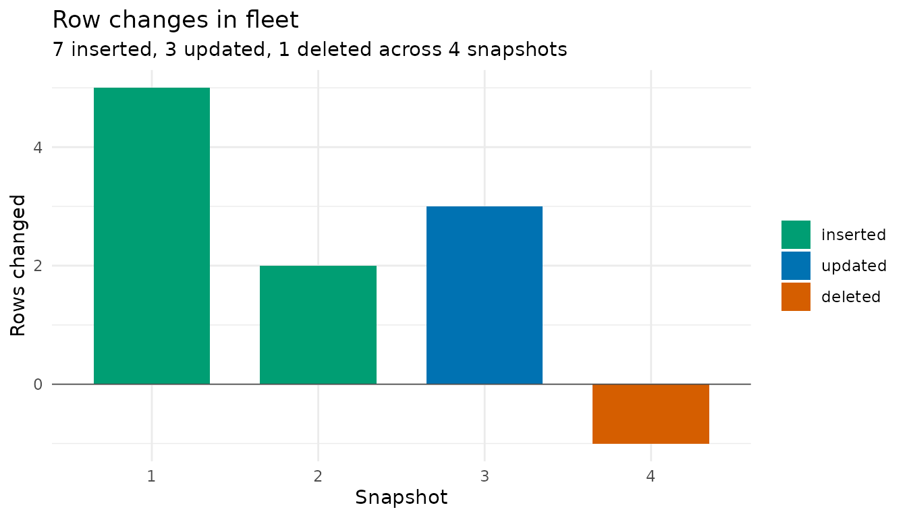
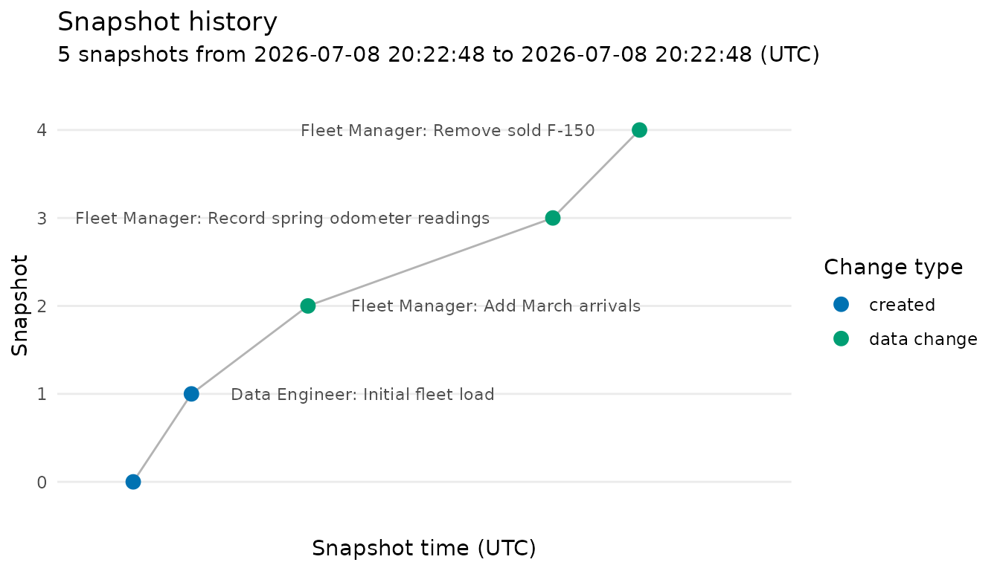
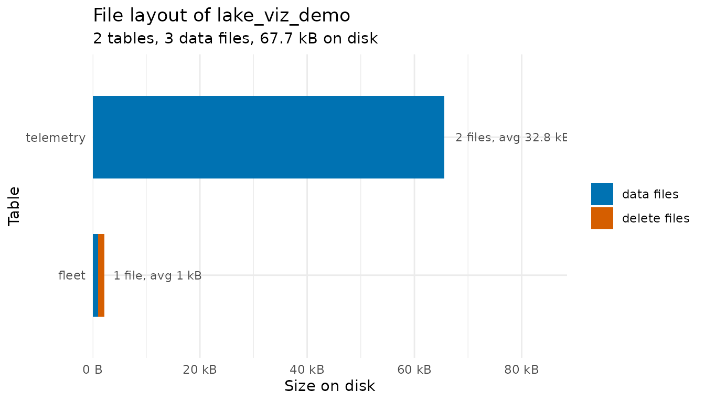
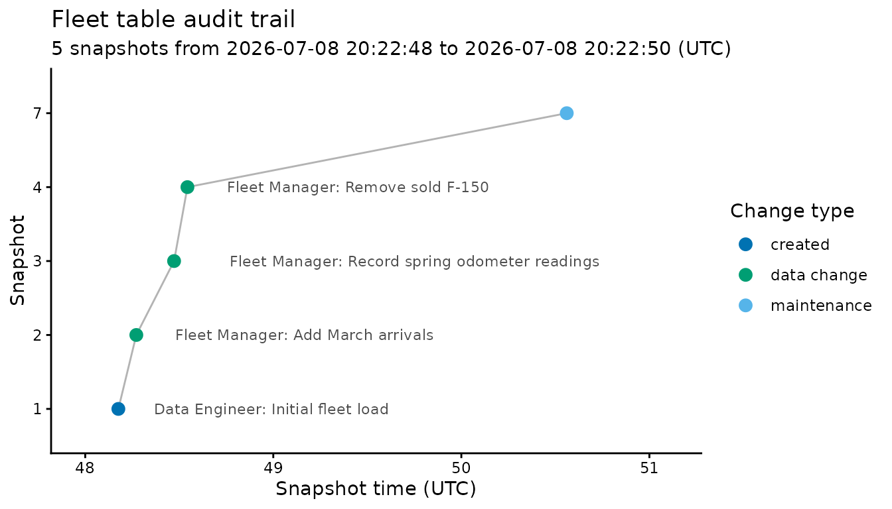

Introduction
A DuckLake keeps detailed records about itself: every change to a table is a snapshot, every changed row is in the change feed, and every Parquet file is tracked in the catalog. All of that comes back to R as data frames, but past a handful of rows a picture is easier to scan. This vignette walks through the package’s three plotting functions:
-
plot_snapshots()draws a table’s history as a commit-log style timeline -
plot_table_changes()shows how many rows each snapshot changed -
plot_table_files()shows how each table’s data is laid out on disk
These require the ggplot2 package, which is suggested (not required) by ducklake.
Building Some History
We’ll create a small lake and put a table through a few changes, recording authors and commit messages along the way.
install_ducklake()
#> Installed ducklake extension.
attach_ducklake(
ducklake_name = "lake_viz_demo",
lake_path = vignette_temp_dir
)
fleet <- tibble(
car_id = 1:5,
model = c("Corolla", "Civic", "Model 3", "F-150", "Outback"),
mileage = c(42000, 38000, 12000, 67000, 55000)
)
with_transaction(
create_table(fleet, "fleet"),
author = "Data Engineer",
commit_message = "Initial fleet load"
)
#> Transaction started.
#> Transaction committed.Now a couple of routine updates:
new_cars <- tibble(
car_id = 6:7,
model = c("CX-5", "Ioniq 5"),
mileage = c(21000, 8000)
)
with_transaction(
rows_insert(get_ducklake_table("fleet"), new_cars, by = "car_id"),
author = "Fleet Manager",
commit_message = "Add March arrivals"
)
#> Transaction started.
#> Transaction committed.
serviced <- tibble(
car_id = c(1, 3, 5),
mileage = c(42750, 13400, 55900)
)
with_transaction(
rows_update(get_ducklake_table("fleet"), serviced, by = "car_id"),
author = "Fleet Manager",
commit_message = "Record spring odometer readings"
)
#> Transaction started.
#> Transaction committed.
sold <- tibble(car_id = 4L)
with_transaction(
rows_delete(get_ducklake_table("fleet"), sold, by = "car_id"),
author = "Fleet Manager",
commit_message = "Remove sold F-150"
)
#> Transaction started.
#> Transaction committed.The audit trail so far:
list_table_snapshots("fleet") |>
select(snapshot_id, snapshot_time, author, commit_message)
#> snapshot_id snapshot_time author commit_message
#> 1 1 2026-07-08 20:22:48 Data Engineer Initial fleet load
#> 2 2 2026-07-08 20:22:48 Fleet Manager Add March arrivals
#> 3 3 2026-07-08 20:22:48 Fleet Manager Record spring odometer readings
#> 4 4 2026-07-08 20:22:48 Fleet Manager Remove sold F-150Plotting the Timeline
plot_snapshots() turns that data frame into a
picture:
plot_snapshots("fleet")
Reading it like a git log: the newest snapshot is at the top, the horizontal position shows when each change landed, and the color shows whether the snapshot created the table, changed data, changed the schema, or was maintenance activity (like flushing inlined data or compacting files).
How Much Changed
The timeline shows when changes happened and what kind they were;
plot_table_changes() shows how big each one was. It counts
the rows each snapshot touched using DuckLake’s change feed (the same
data get_table_changes() returns) and draws them as
diverging bars: rows inserted or updated above the axis, rows deleted
below it.
plot_table_changes("fleet")
Plotting the Whole Lake
Calling plot_snapshots() without a table name shows
every snapshot in the lake, which is useful for a quick health check of
overall activity:

How the Data Is Stored
Behind the scenes, table data lives in Parquet files (very small
writes may be inlined into the catalog until they are flushed out). To
make the storage view interesting, let’s add a larger table alongside
fleet and grow it in two batches, so it ends up with two
data files:
set.seed(42)
telemetry <- tibble(
reading_id = 1:5000,
car_id = sample(1:7, 5000, replace = TRUE),
speed = round(runif(5000, 0, 80)),
fuel = round(runif(5000, 0, 100))
)
create_table(telemetry, "telemetry")
more_readings <- tibble(
reading_id = 5001:10000,
car_id = sample(1:7, 5000, replace = TRUE),
speed = round(runif(5000, 0, 80)),
fuel = round(runif(5000, 0, 100))
)
rows_insert(get_ducklake_table("telemetry"), more_readings, by = "reading_id")The fleet table’s handful of rows were small enough to be inlined, so we flush them into a Parquet file to make them visible to the storage statistics:
flush_inlined_data()
#> Flushed 10 rows from 1 table to Parquet.
#> schema_name table_name rows_flushed
#> 1 main fleet 10get_table_info() reports each table’s file count and
size:
get_table_info()
#> table_name schema_id table_id table_uuid file_count
#> 1 fleet 0 1 019f4365-ba73-7046-ba0a-4d27d940431c 1
#> 2 telemetry 0 2 019f4365-c229-7a29-b803-8ca71074a257 2
#> file_size_bytes delete_file_count delete_file_size_bytes
#> 1 1027 1 1120
#> 2 65525 0 0And plot_table_files() draws it, with delete files (rows
removed but not yet compacted away) stacked in a second color:

This is the picture to watch as a lake ages: many small files or a
growing delete-file share mean it is time for the compaction tools
covered in vignette("storage-and-backups"), like
merge_adjacent_files() and
rewrite_data_files().
Customizing the Plots
Each function returns a regular ggplot object, so you can restyle it like any other plot:
plot_snapshots("fleet") +
ggplot2::theme_classic() +
ggplot2::labs(title = "Fleet table audit trail")
Learn More
-
vignette("time-travel")covers querying and restoring the historical versions these snapshots represent -
vignette("transactions")covers recording authors and commit messages withwith_transaction()andcommit_transaction() -
vignette("storage-and-backups")covers the maintenance functions that keep the file layout healthy